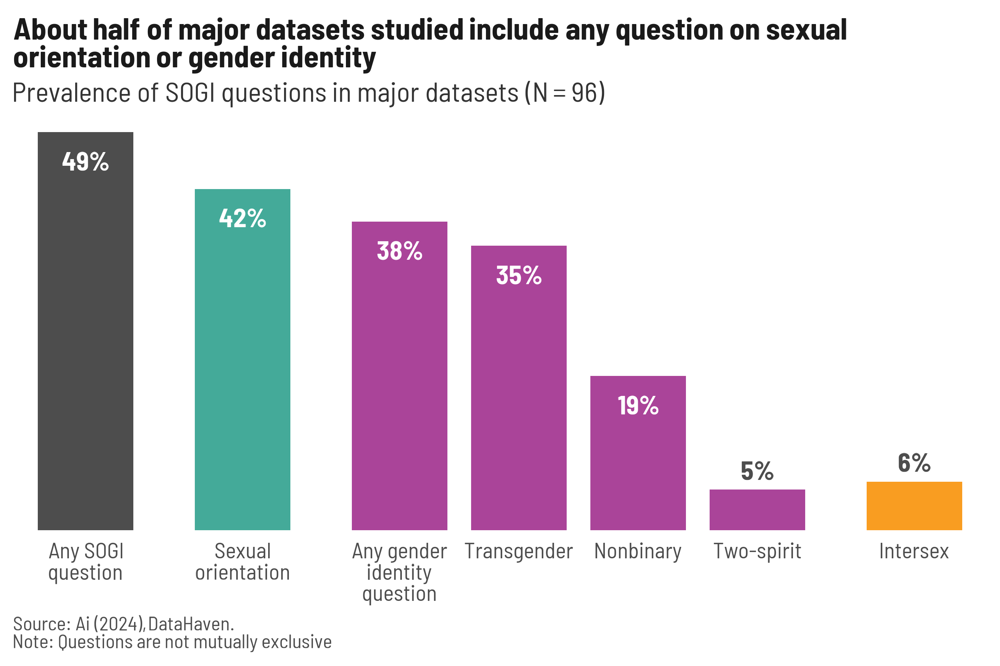

DataHaven / UMBC / Those Nerdy Girls
2026-11-17
Think through the past 24 hours. Jot down some of the data visualizations you encountered, including maps.
The representation and presentation of data to facilitate understanding
– Andy Kirk, Data Visualisation: A Handbook for Data Driven Design
Data graphics visually display measured quantities by means of the combined use of points, lines, a coordinate system, numbers, symbols, words, shading, and color
– Edward Tufte, The Visual Display of Quantitative Information
The rendering of information in a visual format to help communicate data while also generating new patterns and knowledge through the act of visualization itself
– Whitney Battle-Baptiste & Britt Rusert, Introduction to W.E.B. Du Bois’s Data Portraits: Visualizing Black America.
What’s in my data?
Example: food insecurity
Example: food insecurity
Successful data viz is tailored to an intended audience, an intended purpose, and a venue, and interaction between those factors
Some examples:
| Audience | Purpose | Venue |
|---|---|---|
|
|
|
Just like many meetings could have been emails, many charts could have been bulletpoints
Each of these has a time & place
About 1 in 5 Greater New Haven adults is food insecure. Women are more likely than men to experience food insecurity.
You’re studying local food access. Which chart would you use for a) reporting about the issue internally, b) understanding effects of policy, c) getting funding for afterschool programs? Why?
These charts all show the same indicator, percent of adults without health insurance. What are some audiences & purposes that would be appropriate for each?
Be able to explain unit & universe
You can visualize it better if you can explain it
Examples:
Important (and difficult) to strike a balance
Is more data always better? Should you always visualize all the data you have?


Social context
Your data and your work exist in a larger social context. Ask:
